地政学
モスタルはヘルツェゴビナの行政、交通、象徴の中心です。アドリア海、サラエボ、クロアチア方面を結ぶ谷にあり、国境と民族政治の緊張を日常の制度として抱えます。小都市ながら外交的に重い街です。現在も続きます。
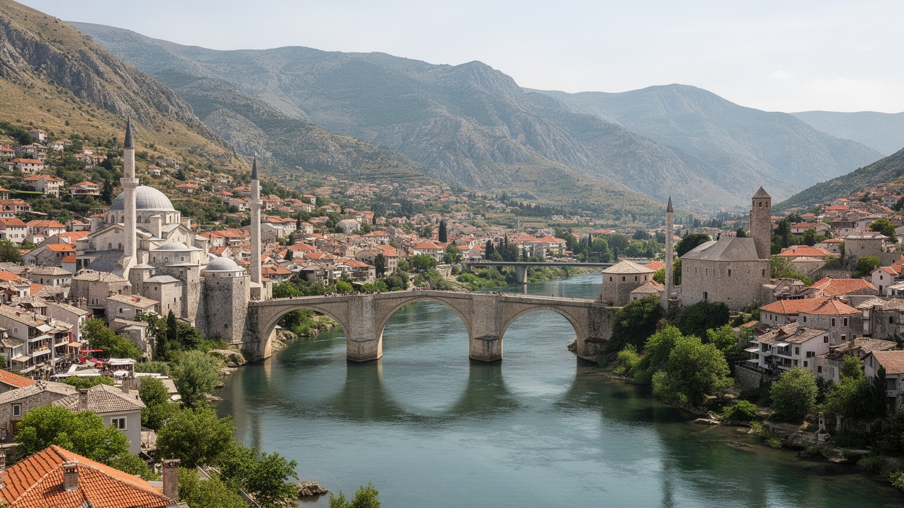
🇧🇦 ボスニア・ヘルツェゴビナ / ヘルツェゴビナ / World City Atlas
ネレトヴァ川の深い谷に旧橋を架け、オスマン、オーストリア＝ハンガリー、ユーゴスラビア、戦争と復興の記憶を歩ける距離に抱えるヘルツェゴビナの中心都市です。
都市の骨格
モスタルは絵葉書の旧橋だけでは読めません。川を挟む生活圏、戦後の政治制度、観光に支えられる旧市街、大学と行政、山麓の村落が一つの都市圏を作っています。
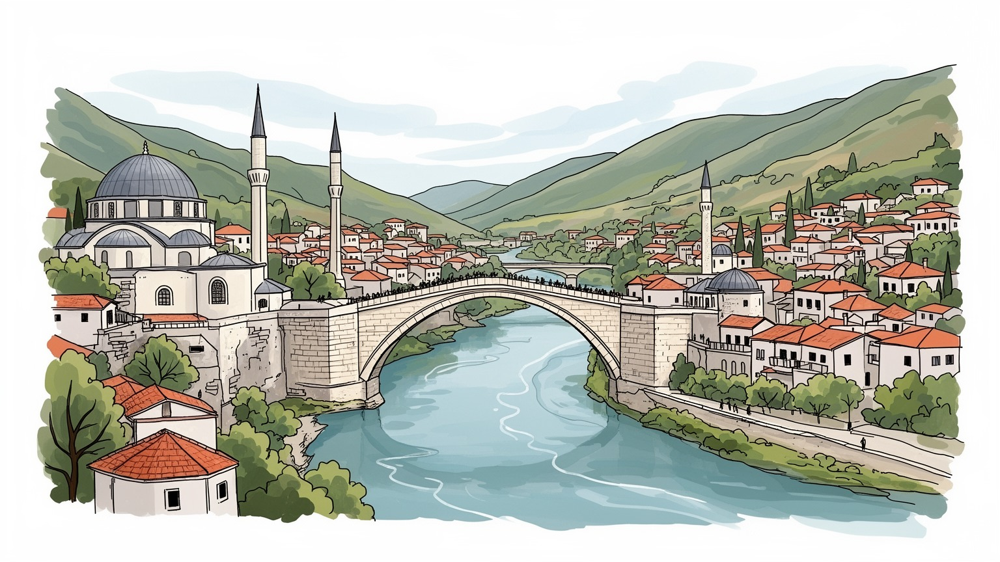
モスタルはヘルツェゴビナの行政、交通、象徴の中心です。アドリア海、サラエボ、クロアチア方面を結ぶ谷にあり、国境と民族政治の緊張を日常の制度として抱えます。小都市ながら外交的に重い街です。現在も続きます。
観光、行政、大学、商業、建設、交通、エネルギーが雇用を支えます。旧市街の店、宿、案内、清掃、修復、川遊びの仕事は季節に左右され、若者の国外流出も地域経済の大きな課題です。公共部門の安定も暮らしを支えます。
モスク、教会、修道院、バザール、音楽、食文化が川の両岸に重なります。宗教は観光名所であるだけでなく、家族の儀礼、学校、慈善、追悼、政治的帰属にも関わる生活の言葉です。祈りは街の時間を今も整えます。
旅行者は旧橋と石畳を歩きますが、住民は学校、病院、市場、バス、郊外住宅、夏の暑さ、冬の雨、雇用不安と向き合います。美しい旧市街の外側に、復興後の日常があります。普通の用事も都市を毎日深く支えます。
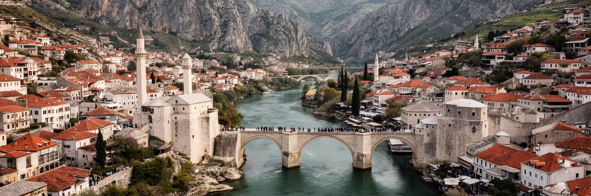
モスタルの都市を理解する入口は、ネレトヴァ川の谷です。透明な緑色の水は観光写真の中心ですが、川は同時に地形、気候、交通、記憶の境界でもあります。石灰岩の山に挟まれた谷は夏に強い熱を集め、冬には雨と風を通し、橋と道路の位置を限ります。旧橋周辺は歩いて回れる密度を持つ一方、市域は広く、山麓の集落、郊外住宅、農地、発電施設、道路沿いの商業地へ伸びています。谷の都市では、直線距離が短くても川を渡る場所や坂の向きによって生活の近さが変わります。水は観光と景観を生みますが、洪水、護岸、河岸の安全、夏の水遊び、飲料水、発電とも結びつきます。モスタルを美しい旧市街としてだけ見ると、川が都市を動かす実務的な力を見落とします。橋の上から眺める川面と、日常の通学、通院、配送、郊外から中心へ入るバスの経路を重ねると、谷の街の現実が見えてきます。川は両岸を分ける線であると同時に、都市を一つに見せる鏡でもあります。その二つの性格を抱えることが、モスタルの地理的な特徴です。さらに、谷の広がりは都市の気候適応にも関わります。日陰、井戸、水辺の安全、斜面の緑地、熱を逃がす風の通り道は、観光施設よりも先に住民の健康を守る要素です。川を読むことは、景観と防災と暮らしを一緒に読むことです。足元の石と水音も、都市の尺度を教えます。
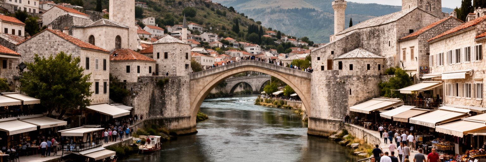
モスタルの旧橋は、都市名そのものと結びつく象徴です。オスマン期にネレトヴァ川へ架けられた橋は、技術、交易、歩行、共同体の記憶を一つの石の弧に集めました。戦争で破壊された後、国際的な支援と地元の技術によって再建され、旧市街とともに世界遺産として評価されています。再建された橋は、失われたものを完全に戻したわけではありません。それでも、破壊を受けた都市が何を公共の記憶として修復するのかを示す強い場所です。橋の上では観光客が写真を撮り、飛び込みの伝統が見せ場になり、周囲の店や宿が収入を得ます。一方で、石畳の摩耗、混雑、土産物化、文化財保全、住民の生活動線をどう両立するかが問われます。旧橋を読むことは、美しいアーチを見るだけではありません。橋を守った職人、破壊を記憶する家族、復興を支えた国際機関、観光で働く若者、川を毎日渡る住民の時間を重ねることです。橋は和解の象徴として語られますが、象徴が本当に働くには、両岸の教育、雇用、政治参加、公共サービスが一緒に改善される必要があります。石の弧は都市をつなぐ約束であり、その約束は毎日の使われ方によって試されています。世界遺産としての管理は、景観を守るだけでなく、過度な商業化を抑え、住民が中心部を避けずに使えるようにする仕事でもあります。橋が記憶の展示物に留まらず、生活の道であり続けることが重要です。
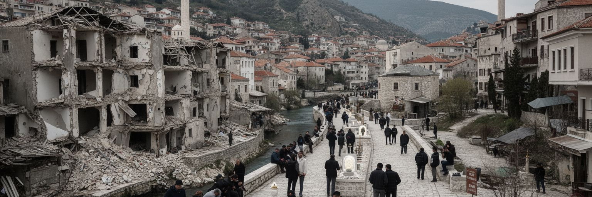
モスタルは、ボスニア戦争とその後の分断を都市の制度として経験してきました。建物の傷跡は少しずつ修復され、旧橋は再建されましたが、学校、政治、記念日、言語、メディア、スポーツ、住宅の選択には、民族的な境界がなお残ります。旅行者が旧市街を数時間歩くだけでは、この見えない境界は分かりにくいです。しかし住民にとっては、どの学校へ通うか、どの公共機関を使うか、どの記憶を家族が語るかが、都市の地図を細かく分けます。復興は瓦礫を片づける作業だけではありません。公共施設を共有できるか、若者が相手側の地区へ普通に行けるか、追悼が相手の痛みを消さない形で行われるかが問われます。モスタルの難しさは、戦争が終わった後も、平和が日常の信頼として自動的には戻らない点にあります。同時に、商売、大学、セヴダの歌、カフェ、サッカー、観光の現場では、境界をまたいで働き、学び、友人を持つ人もいます。地元ラジオやSNSの話題も時に境界を映し、時に若い世代の共通語になります。重要なのは、和解という言葉を簡単に使わず、制度的な分離と日常の交流が同時に存在する現実を見ることです。モスタルは復興の象徴であり、未完の政治課題でもあります。壊れた建物を保存するか修復するか、記念碑をどこに置くか、通りの名前をどう扱うかも、都市の記憶をめぐる選択です。日常の小さな移動と公共の決定が、平和の質を測っています。
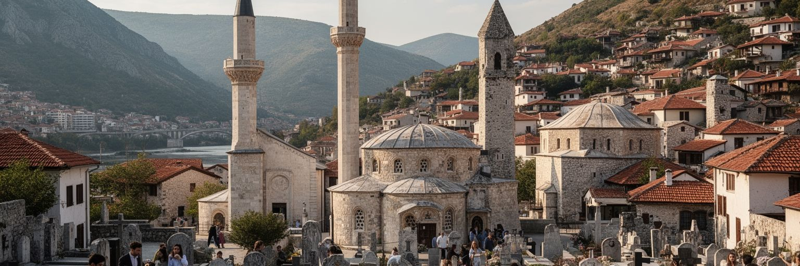
モスタルでは、宗教が景観と生活の両方に深く入り込んでいます。旧市街のモスク、カトリック教会、修道院、墓地、鐘、礼拝への呼びかけは、街の音と視線を作ります。宗教は観光客にとって建築の魅力ですが、住民にとっては家族行事、結婚、葬儀、学校、慈善、祝祭、追悼、政治的な帰属と結びつく日常の制度です。ヘルツェゴビナには近隣の巡礼地メジュゴリエもあり、信仰の移動は宿泊、バス、土産物、通訳、案内の仕事を生みます。一方で、宗教的な象徴は共同体を支える力であると同時に、戦争の記憶や民族政治と絡む時、境界を強めることもあります。モスタルを宗教都市として読むには、塔の高さや礼拝堂の美しさだけでなく、異なる信仰の住民が市場、病院、大学、職場でどのように出会うかを見る必要があります。宗教施設は静かな祈りの場所であり、観光客の動線であり、共同体サービスの拠点でもあります。消費される景観としてではなく、誰かの悲しみと希望を受け止める場所として扱うことが、街を理解するうえで大切です。祈りの時間が川の両岸に響く時、モスタルの公共空間は、分かれた記憶と共有された日常を同時に抱えます。祝祭の日には親族が集まり、墓地を訪れ、食卓を囲みます。宗教は境界の印だけではなく、孤立した人へ手を伸ばす社会的な網でもあります。その二面性を見落とさないことが必要です。
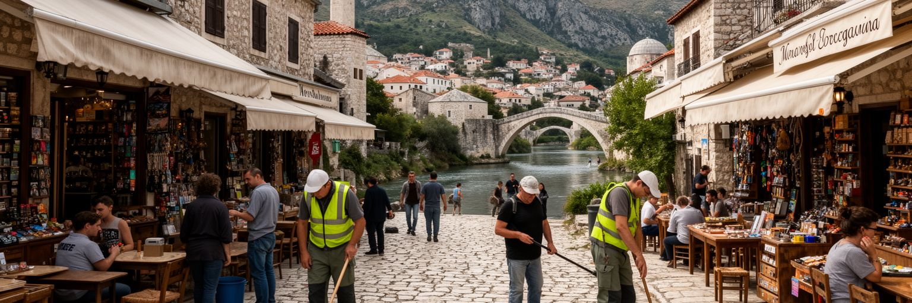
モスタルの旧市街は、ボスニア・ヘルツェゴビナでも特に訪問者を集める観光地です。旧橋、クユンジュルクの石畳、川沿いのカフェ、土産物店、宿、博物館、飛び込みの見物、近郊ツアーが、中心部の経済を動かします。観光は復興後の都市に収入と国際的な視線をもたらしましたが、その労働は季節性が強く、夏の暑さ、長時間の接客、多言語対応、家族経営の負担に支えられています。華やかな写真の背後には、朝の清掃、石畳の修繕、食品の搬入、客室管理、ガイドの説明、駐車場やバスの誘導、廃棄物処理があります。観光客が増えるほど、中心部の家賃や店舗構成は旅行者向けに寄り、住民の普通の買い物や静かな暮らしは押されやすくなります。モスタルの観光を深く見るには、入込客数や世界遺産の知名度だけでなく、利益が地元に残るか、若い人が安定して働けるか、文化が単なる記念品になっていないかを考える必要があります。旧橋は都市の宝ですが、周辺の経済が短期の消費に偏りすぎれば、生活都市としての厚みは弱まります。屋台の焼き菓子、熱い石畳、川風に混じるコーヒーの香り、土産物の呼び声も小さな街頭経済です。日帰り客が多い都市では、滞在時間が短いほど地元への波及も限られます。宿泊、食材、案内、修復職人、公共施設へ収入を回す設計が、観光依存の弱さを和らげます。
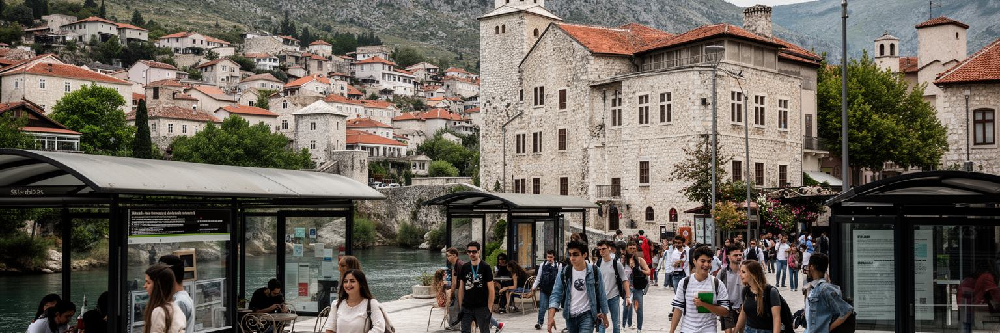
モスタルはヘルツェゴビナの大学都市でもあります。複数の高等教育機関、学生寮、図書館、カフェ、バス路線、アルバイト先が、観光地とは異なる若い時間を街に作ります。大学は医療、工学、教育、言語、経済、文化活動の人材を地域に送り、行政や民間企業、学校、病院を支える基盤になります。一方で、ボスニア・ヘルツェゴビナ全体の雇用機会の弱さ、政治的不信、賃金水準、国外移住の回路は、若者の将来設計に強く影響します。学んだ後にモスタルへ残れる仕事が少なければ、都市は教育を通じて人材を育てても、その成果を地域で使いにくくなります。学生生活も分断の影響から自由ではありません。言語、カリキュラム、友人関係、住む地区、家庭の記憶によって、同じ都市にいても経験は分かれます。それでも、授業、音楽、サッカー、起業、カフェでの会話、夜の小さなライブは、境界を越える日常的な場を作ります。モスタルを将来の都市として読むには、世界遺産の保存だけでなく、若者が安心して学び、働き、家を持ち、政治へ声を出せるかを見る必要があります。若い人が街を出る理由を減らすことは、人口対策であると同時に、戦後社会の信頼を作り直す仕事でもあります。奨学金、インターン、地域企業との共同研究、学生向け住宅、夜間の安全な移動は、抽象的な希望より具体的な定着策になります。大学の廊下で始まる関係が、分断を越える実務の入口にもなります。
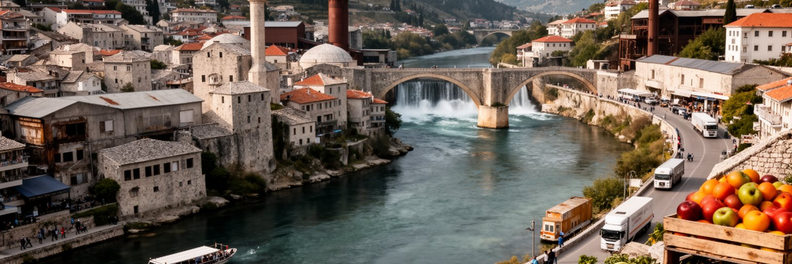
モスタルの経済は観光だけではありません。行政、大学、医療、商業、建設、物流、農産物取引、エネルギー関連の仕事が、広い市域とヘルツェゴビナ地方を結んでいます。ネレトヴァ川流域の水力発電は地域のインフラと雇用に関わり、道路はサラエボ、アドリア海沿岸、クロアチア方面をつなぎます。旧ユーゴスラビア期には工業と公共部門が大きな役割を持ち、戦争と移行経済の中で多くの職場が変化しました。現在は小売、サービス、観光、公共機関の比重が高く、季節需要と公的雇用への依存が暮らしを左右します。周辺のカルスト地形と温暖な気候は、ブドウ、果物、野菜、畜産、石材、再生可能エネルギーの可能性を持ちますが、投資、道路、技能、政治の安定がなければ広がりにくいです。産業を読む時には、大企業の数だけでなく、家族商店、修理工、運転手、建設作業員、農家、ホテルの仕入れ、公共部門の職員がどうつながるかを見る必要があります。モスタルは小さな市場でありながら、ヘルツェゴビナ全体のサービス拠点として動きます。観光の収入が地元の農産物や手仕事、修復技術、交通へ流れれば、旧市街のにぎわいは地域経済の循環にもなります。川と道路をどう使うかが、都市の雇用を広げる鍵です。エネルギーと観光は時に衝突もします。発電、河川景観、自然保護、ラフティング、飲料水を調整する力が、地域の持続性を決めます。
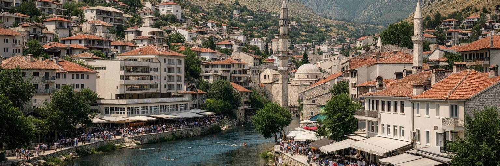
モスタルの日常は、旧橋の周囲だけでなく、集合住宅、山麓の戸建て、学校、病院、市場、バス停、郊外の商業施設に広がっています。住民は夏の強い日差し、冬の雨、坂道、車への依存、公共交通の本数、医療や行政手続き、家族の国外移住と向き合いながら暮らします。戦後復興で修復された建物の隣に、空き地、未利用の構造物、古い工場跡、傷の残る壁が見える場所もあります。住宅の問題は、物理的な建物だけではありません。どの地区に住むかは、学校、職場、宗教施設、友人関係、家族の記憶、政治的な安心感と結びつきます。若い世帯にとっては、仕事の安定、住宅価格、ローン、保育、通勤が将来を決めます。高齢者には、坂道、暑さ、医療への距離、家族の国外移住による孤立が重くなります。観光都市の中心部では短期滞在向けの部屋が増え、地元住民の家賃や静けさに影響することもあります。モスタルを生活都市として見るには、旧市街の美しさと、郊外のスーパー、青果市場、早朝のバス、夏の日陰、夜の病院、学校帰りの子どもを同じ地図に置く必要があります。普通の暮らしが支えられてこそ、世界遺産の景観も都市全体の価値になります。住宅の修繕、断熱、日陰づくり、歩道の安全、子どもの遊び場は、観光より地味でも毎日の安心を作ります。生活の基礎が弱ければ、若者は街に残りにくくなります。
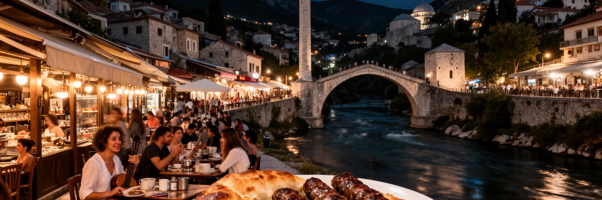
モスタルの文化は、石造りの旧市街だけでなく、食卓、カフェ、音楽、詩、スポーツ、家族の祝い事に息づいています。バザールの銅細工、川辺のカフェ、チェヴァピ、ブレク、ドルマ、コーヒー、ヘルツェゴビナのワインや果物は、オスマン、地中海、バルカン、中央欧州の影響が交差する味を作ります。食文化は観光客に分かりやすい魅力ですが、住民にとっては親族を迎え、隣人と話し、宗教行事や季節の記憶を確かめる方法でもあります。セヴダの歌、演劇、映画、学校行事、サッカーの応援は、分断された都市に別の共同性を生みます。ただし、文化は簡単に和解を実現する魔法ではありません。どの言葉で歌うか、どの記念日を祝うか、どのクラブを応援するかが帰属意識と結びつくため、表現は時に境界を映します。それでも、料理人、演奏家、職人、学生、観光ガイド、家族経営の店は、毎日の仕事を通じて都市の混ざり合いを保っています。モスタルの文化を読むには、伝統を飾りとして消費するだけでなく、誰が技を受け継ぎ、誰が店を続け、誰が言葉や料理を次の世代へ渡しているかを見る必要があります。食卓と市場は、戦争の記憶を消す場所ではなく、暮らしを続ける力を示す場所です。小さな劇場、学校の発表、地域の祭り、川辺の夜の会話とスマホで広がる店の評判も、都市文化を支えます。観光客向けの舞台と住民の表現が重なる時、街の文化は商品以上の厚みを持ちます。
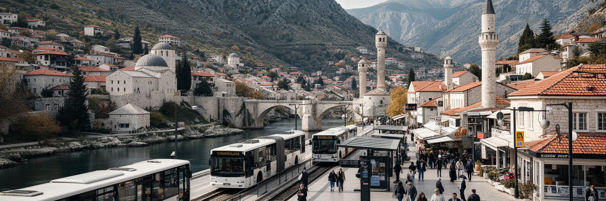
モスタルは、サラエボとアドリア海方面を結ぶ谷の交通拠点です。鉄道、幹線道路、長距離バス、空港、観光ツアーの車両が、ヘルツェゴビナの山地と海沿いの都市、近隣の巡礼地や自然景勝地をつなぎます。旅人にとっては旧橋へ向かう入口ですが、住民にとって交通は通学、通院、買い物、行政手続き、国外へ働きに出る家族との往来を支える生活インフラです。谷の道路は地形の制約を受け、夏の観光期には混雑し、冬の雨や斜面の危険も移動を左右します。公共交通が弱い地区では車への依存が高まり、高齢者、学生、低所得の世帯には負担になります。空港や道路の改善は観光と投資を呼び込む可能性がありますが、中心部へ車を入れすぎれば旧市街の歩行環境と景観は傷みます。モスタルの交通を読むには、観光客の到着だけでなく、郊外から病院へ向かう人、大学へ通う学生、市場へ品物を運ぶ農家、国境を越える親族の移動を同じ流れとして見る必要があります。橋は都市の象徴ですが、現代のモスタルを支える橋は道路網、バス路線、鉄道、空港にも広がっています。山と海の間で人を運ぶ力が、都市の経済と日常をつないでいます。歩行者に優しい中心部と、広い市域を支える公共交通を両立できるかは重要です。移動の不便は雇用、教育、医療への距離を広げ、都市の分断を別の形で深めます。通院や通学にも響きます。
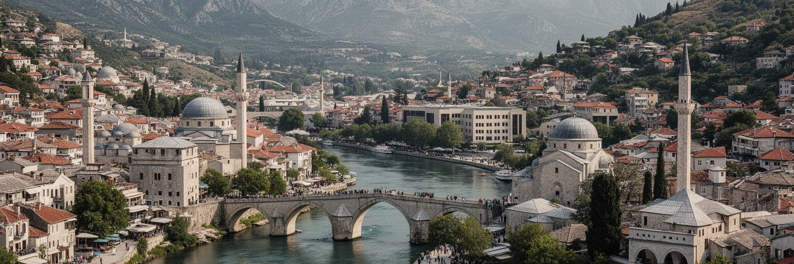
モスタルを読むことは、旧橋の美しさを入口にしながら、そこに収まりきらない都市の層へ進むことです。ネレトヴァ川は景観を作り、同時に両岸の距離を意識させます。世界遺産の旧市街は観光と誇りを生みますが、戦争の傷、政治的な分断、若者の移住、住宅と雇用の不安を消すわけではありません。モスクと教会、大学と市場、バス停とホテル、山麓の住宅と川辺のカフェは、それぞれ異なる都市の時間を持ちます。モスタルの重要性は人口規模ではなく、バルカンの歴史、宗教、国際復興、観光、分断後の制度が歩ける距離に重なっている点にあります。橋は和解の象徴として語られますが、和解は石の修復だけではなく、学校、仕事、公共交通、文化活動、行政サービスの共有として毎日試されます。観光客は旧橋を渡ることで街を理解した気になりやすいですが、本当の読み方は、橋を渡った後に両岸の生活を見続けることです。夏の暑さの中で働く店員、大学へ向かう学生、家族を国外へ送り出す親、墓地で祈る人、川沿いを歩く子どもを同じ都市の住民として見る時、モスタルは完成した復興物語ではなく、未完の生活都市として立ち上がります。その未完さこそが、街の重みです。美しい都市ほど、見えない制度や労働を覆い隠しやすいです。モスタルでは、橋の写真から一歩進み、川、学校、住宅、宗教、仕事をつなげて見る姿勢が必要です。